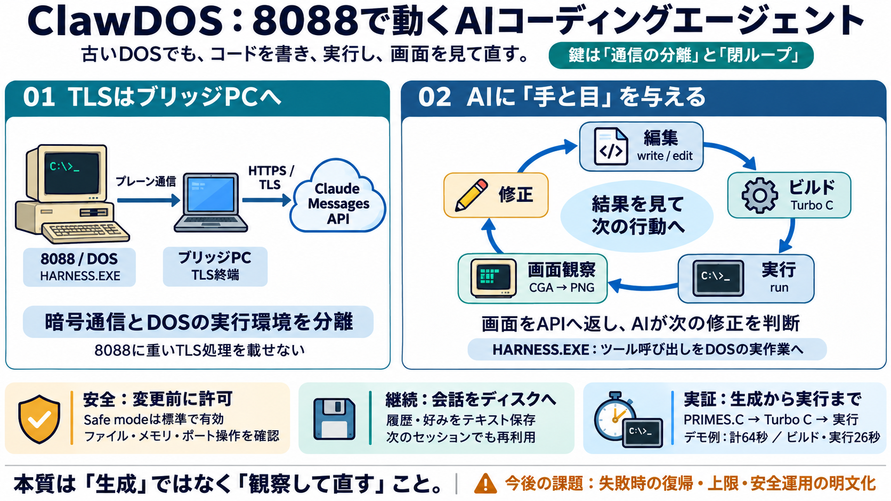

GitHub - skiselev/micro_8088: Micro 8088 - IBM XT Compatible Processor Board based on Faraday FE2010 chipset · GitHub
## Introduction Micro 8088 is an easy to build IBM PC/XT compatible processor board. It uses a fairly common Faraday FE…

8088世代（IBM PC XTなど）のDOS上で動く「AIコーディングエージェント」を、Claude Messages APIと連携して“試して直す”閉ループにしたプロジェクトです。
8088の当時PCはTLS（HTTPS）を実装・運用するのが現実的ではありません。だから「AI呼び出し（API通信）」を、そのまま8088に載せません。
ClawDOSは、文章生成だけで終わらず、DOS上で編集・コンパイル・実行し、その“画面証拠”をLLMへ返して次の指示に反映します。
DOSには常駐プログラム HARNESS.EXE があり、Messages APIへ送受信し、返ってくる「ツール呼び出し」に従ってローカル作業を実行します。
会話はツール（sysinfo / dir / read / search / write / edit / run / peek / poke…）としてDOS作業へ翻訳されます。これが“自動実作業”の核です。
実行画面を画像化し、LLMへ返せるようにします。Run call後、CGAの映像メモリをコピーしてPNGエンコードして送信する、と説明されています。
会話履歴や“メモリ”をディスク上のテキストとして保存し、次回の対話で前回のデモや好みを再利用できます。
Safe modeがデフォルトで有効で、ファイル変更やメモリ/ポート操作などの前に Allow … ? (y/n) を求めます。
デモでは単文の指示から PRIMES.C を生成し、Turbo Cでコンパイル・実行して結果を画面で得るまで進めます。
例としてPRIMESはEnterから64秒で結果まで到達し、うち26秒がコンパイル/リンク/実行に相当したとされています。HARNESS側でキャッシュやリトライも行われると説明されています。
総合するとClawDOSは、古い環境でも“実作業をツール化して閉ループ化”する点が強力です。一方で、失敗時の回復や上限・信頼性の情報が十分ではないという見方もあります。
この圧縮版は、ユーザー提示テキスト（要約・Points・FAQ・意見・改善案）に基づいて構成しています。外部リンクの裏取り情報は、この入力内では確認できません。
## Introduction Micro 8088 is an easy to build IBM PC/XT compatible processor board. It uses a fairly common Faraday FE…
Disk guideMemory mapFirst application ### Developer guide → Toolchain setup with Claude Code or Codex, building and te…
## Inspect it You can find introductory texts and the system executable `F-PC.EXE` in the directory `fpc`. The subdirec…
Title: COS to BTC: ClawdOS Price in Bitcoin | CoinGecko Image 1: CoinGeckoImage 2: CoinGecko. Image 3: app QR code Get t…
当報道資料は、2026年5月5日（現地時間）にIBM Corporationが発表したプレスリリースの抄訳をもとにしています。原文はこちらを参照ください。 IBM、IBM ロゴ、ibm.comは、世界の多くの国で登録されたInternat…